GitHub - add links to sort by most recently updated (2018-12-27) (2022-05-03)
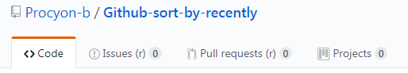
And in the GitHub page header (since 2019-11-22).
On the page displaying all your Pull requests, or Issues, a new category ("Commenter") now appears (added 2019-11-28).
Clicking this button will display all the issues/pr in which you made a comment. They might not appear in the other categories.
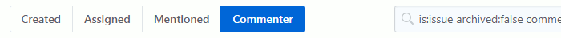
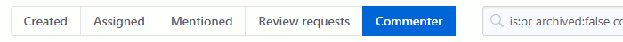
Get the script from greasyfork.org
The script has its own GitHub page.
GitHub - flip comparison between forks/branches - add an icon to swap sides when comparing changes
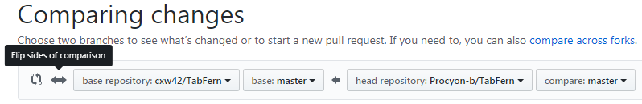
The script has its own GitHub page.
Gmx / web.de - re-enable email "standalone" view (separate window)Gmx / web.de - réactiver l'ouverture des emails dans une fenêtre popup (2020-01-17) (2022-03-02)
The functionnality is still available, but I could not find an option in the interface to change it. So here is a userscript to do that.
The script adds a checkbox next to the buttons toolbar (see screenshot). When checked the popup behavior is enabled, when unchecked it's the current default. The script remembers your choice.
The script offers 2 possibilities to open an email in a separate popup window:
- click the "Open email" icon in the email listing (see screenshot). It will open a popup if the checkbox is checked.
- when a message is opened, ctrl+click the "Fullscreen" button next to the "Save" and "Print" icons/buttons. A pop is opened regardless of the checkbox state.
On the first installation, the option is automatically set to checked.
If the userscript is installed outside of a script manager (Tampermonkey, Greasemonkey, Violentmonkey, ...), it uses an alternative method to store the checkbox state. It remembers the state as long as the window/tab is open.
The script has been tested on gmx.net , gmx.com , gmx.fr , gmx.es , gmx.co.uk , gmx.at , gmx.ch , web.de .
As of July 1st 2020, gmx has removed this function on all versions of its site.
Starting with v0.6 (July 12), the script tries to mimic how the functionality worked. It opens a popup with the email displayed. It does this by duplicating a frame of the site, and hides the nonrelevant elements of the page: the listing, the ads panels, and until they can be used correctly inside the popup, the button bar.
If, when using the popup, you see elements appearing that shouldn't, please contact me so I can fix it.
August 4th 2020, again gmx internal working has changed. The popup can't display the message as it did. I have to find another work-around...
August 5th 2020, the new version (0.6.2) revives the popup view.
February 10 2021, fix code to handle minor modification of HTML of the page.
Get the script from greasyfork.org
La fonctionnalité est toujours disponible, mais rien dans l'interface ne permet de la changer. Voici donc un userscript pour le faire.
Le script ajoute une case à cocher dans la barre de boutons (voir capture d'écran). Quand elle est cochée, l'ouverture de la fenêtre popup est activée. Quand la case est décochée cela rétablit le comportement actuel par défaut. Le script garde en mémoire votre choix.
Le script offre 2 possibilités d'ouvrir un email dans une fenêtre popup séparée:
- cliquer l'icone "Ouvrir email" dans le listing des emails (voir capture d'écran). Une fenêtre popup s'ouvrira si l'option est activée.
- quand un message est ouvert, ctrl+cliquer le bouton "Plein écran" à côté des icones/boutons "Sauvegarder" et "Imprimer". Une popup s'ouvrira quel que soit l'état de la case à cocher.
L'option est automatiquement cochée au moment de l'installation du script.
Si le script est installé en dehors d'une extension de gestion de scripts (Tampermonkey, Greasemonkey, Violentmonkey, ...) il utilise une méthode alternative pour sauvegarder l'état de l'option. Il s'en souvient tant que la fenêtre/onglet est ouverte.
Ce script a été testé sur gmx.net , gmx.com , gmx.fr , gmx.es , gmx.co.uk , gmx.at , gmx.ch , web.de .
Au 1er juillet 2020, gmx a retiré cette fonction de toutes les versions de son site. Ce script ne fonctionne plus actuellement.
A partir de la version v0.6 (12 juillet), le script essaie de simuler le fonctionnement de cette option. Il ouvre une fenêtre popup contenant le message. Pour cela il duplique une "frame" du site, et cache les éléments inutiles de la page : la liste, les panneaux de publicité, et jusqu'à ce que cela fonctionne correctement dans la popup, la barre de boutons.
Si quand vous utilisez la popup, vous voyez des éléments qui ne devraient pas y être affichés, s'il vous plaît, contactez-moi pour que je puisse corriger.
4 août 2020, le fonctionnement interne de gmx a encore changé. La popup ne peut plus afficher le message directement. Je dois trouver une autre méthode. Suite au prochain épisode...
5 août 2020, la nouvelle version (0.6.2) rétablit l'affichage du message dans une fenêtre séparée.
10 février 2021, correction suite à une petite modification du code HTML de la page.
Le script est disponible sur greasyfork.org
Gmx / web.de - show new unread foldersGmx / web.de - marquer nouveaux dossiers non-lus (2020-03-23) (2021-03-21)

A folder is unmarked when the unread count decreases (you've read an email). You can also unmark a folder - without the need to read a message - by pressing CTRL + left-clicking the folder's spanner next to the message count (see screenshot).
Upon installation of the script, you must reload the webmail page/tab. Folders will then be marked when new emails are received.
Notes:
- Supports multiple accounts on the same domain.
- Compatible with gmx.net, gmx.com, gmx.fr, gmx.es, gmx.co.uk, web.de, (and gmx.at , gmx.ch which use gmx.net).
Contact me if there are other domains. But it should work correctly for these domains too. - If you are reading your emails in a private tab, tampermonkey needs to be configured to run in private mode. And the "Security" option "Store data in incognito mode" needs to be set to "Permanent" if you want the script to store its data (marked folders and unread count).
This is a work in progress. I can add an option interface to change the marked color (if you are already using userstyles to change the default colors, and red doesn't work well) as well as other settings (eg. never mark specific folders).
I have another userscript for gmx ("standalone view") to add the possibility to open an email in its own stand-alone popup window (as it used to be).
If you're german or spanish, and find this script useful, you can propose translation of this text in your language. Any help is welcomed.
Get the script from greasyfork.org
Un dossier repasse a l'état non-marqué quand le compte des messages non-lus diminue (vous venez d'ouvrir un email). Vous pouvez aussi dé-marquer un dossier en appuyant sur la toucher CTRL pendant que vous cliquez sur le symbôle de clé situé à côté du compteur (voir capture d'écran).
Au moment de l'installation du script, vous devez recharger la page/l'onglet du webmail. Les dossiers seront marqués dès l'arrivée de nouveaux messages.
Notes:
- Supporte plusieurs comptes sur le même domaine.
- Compatible avec gmx.net, gmx.com, gmx.fr, gmx.es, gmx.co.uk, web.de, (et gmx.at , gmx.ch qui utilise gmx.net).
Contactez-moi si d'autres domaines existent. Mais le script devrait aussi fonctionner sur ces domaines. - Si vous lisez vos email dans un onglet privé, tampermonkey doit être configuré pour fonctionner en navigation privée. Si vous voulez qu'il garde en mémoire l'état lu/marqué/non-lu en navigation privée, vous devez aussi mettre l'option "Sécurité"/"Enregistrer les données dans le mode de navigation privée" en "Permanent".
Ce script est toujours en développement. Si vous le désirez, je peux ajouter un interface pour modifier des options: changer la couleur du marqueur (si vous utiliser des styles pour modifier les couleurs par défaut, et que le rouge ne convient pas), et d'autres (ex: ne jamais marquer certains dossiers).
J'ai un autre script pour gmx ("standalone view") pour redonner la possibilité d'ouvrir un email dans sa propre fenêtre (comme c'était le cas auparavant).
Si vous être allemand ou espagnol, et que ce script vous plaît, vous pouvez m'envoyer la traduction de ce texte dans votre langue. Toute aide est la bienvenue.
Le script est disponible sur greasyfork.org
Google - dismiss cookies warningGoogle - supprime l'avertissement de cookies (2020-10-02) (2021-07-06)
The popup is not hidden, will flash while it is dismissed by the script and disappear for ever (until you clear your cookies). It's on purpose in case the script fails and leave you in a state where google constantly asks the same question.
If you are really fed up with cookie warnings on many sites, I suggest installing an extension that handles it automatically (including for google). I can suggest one that works well for chrome and firefox. On the add-on/extension store, search for: I don't care about cookies
Note: google regularly changes the style names. This could break the userscript. Please post a comment if this is the case for you.
2021/04/02: Google has modified the display of the dialog. The script has been fixed. Report here if it still fails for you.
The new dialog is a little bit different. The remark on Firefox and the userscript managers can be disregarded if the older version of the dialog is no longer used by google.
Note for Firefox users: If you are using tampermonkey as userscript manager, this script won't work. There is a bug in Tampermonkey and Tampermonkey beta - as well as Greasemonkey - which prevents the script to be executed on the popup. Other scripts from other programmers might not work properly too; use the solution below.
Solution for Firefox: As far as I know, only one userscript manager works properly: ViolentMonkey. Feel free to install it to run this userscript.
Get the script from greasyfork.org
La popup n'est pas cachée, et apparaît un court moment le temps que ce script la confirme. Elle ne devrait plus réapparaître (jusqu'à ce que vous supprimiez les cookies). Ceci à dessein pour éviter une problème si le script échoue et que google continue à vous poser la même question.
Si vous en avez marre des avertissements de cookies présentés par de nombreux sites, je vous suggère d'installer une extension qui le gère automatiquement (y compris pour google). Je peux en suggérer une qui fonctionne bien bien sur chrome et sur firefox. Faites une recherche sur le texte: I don't care about cookies
Note: google change réglièrement le nom des styles. Cela peut casser le script. Si c'est votre cas, n'hésitez pas à poster un commentaire.
2021/04/02: Google a modifié le dialogue des cookies. J'ai corrigé le script. Rapportez tout problème si vous en rencontrez encore.
Le nouveau dialogue est légèrement différent. La remarque sur Firefox et les gestionnaires de userscript peut être ignorée si l'ancienne version du dialogue n'est plus utilisée par google.
Note pour les utilisateurs de Firefox : Si vous utilisez tampermonkey en tant que gestionnaire de userscripts, ce script ne fonctionnera pas. Il y a un bug dans Tampermonkey et Tampermonkey beta - ainsi que dans Greasemonkey - qui empêche le script d'être exécuté sur la popup. D'autres scripts provenant d'autres programmeurs peuvent aussi rencontrer ce problème et ne pas fonctionner correctement; utilisez la solution çi-dessous.
Solution pour Firefox : Pour autant que je sache, un seul gestionnaire de scripts fonctionne correctement : ViolentMonkey. Libre à vous de l'installer.
Le script est disponible sur greasyfork.org

Google - fix TLD linksGoogle - corriger l'extension TLD des liens
On its homepage (www.google.com, www.google.co.uk, www.google.be, or whichever TLD is used), and on the search result pages, google directs some of its internal links to the google domain associated with the TLD used for the geographic position of your IP address. This means that if you want to use a google TLD of another country (or the .com from outside the US), or if you're travelling and still want to use your home TLD, you'll end with links to the local TLD.
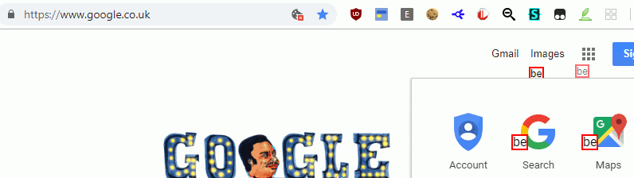
This userscript rewrites every link that doesn't use the .com TLD or the TLD of the current page, and replaces every non-matching TLD with the current TLD. In the screenshots, all the tagged links are modified to use the page TLD. (Read the github page for a more complete explanation)
More infos and screenshots on the github repository.
Get it from GitHub. (and click the "Raw" button to load it into tampermonkey)
Sur sa page d'accueil (www.google.com, www.google.be, www.google.fr, peut importe le TLD utilisé), et sur les pages de résultats, google redirige certains de ses liens vers le domaine associé au TLD utilisé par défaut dans la zone géographique de votre adresse IP. Cela signifie que si vous voulez utiliser le domaine TLD d'un autre pays (ou .com en dehors des États-Unis), ou si vous voyager et voulez continuer à utiliser votre TLD, vous allez vous retrouver avec des liens vers le TLD local.
Ce script réécrit les liens qui ne finissent pas en .com ou avec le TLD de la page actuelle, et le remplace pas le TLD de la page. Dans la capture d'écran, tous les liens marqués (carré rouge) sont modifiés pour utiliser le TLD de la page. (La page github donne plus de précisions, en anglais)
Plus d'infos et de captures d'écrans sur github.
Le script est disponible sur GitHub. (cliquer le bouton "Raw" pour charger automatiquement dans tampermonkey)
IMDb - fix links (2021-04-23) (2021-09-12)
It keeps other parameters intact: search query, hash element.
For me, the usefulness of the script is mainly to get back uniformity in pages urls.
With a tracking element, the same page can be linked with different urls, and your browsing history won't show a page as viewed (with a link in a different color) even if you have viewed it previously.
Example:
- The link to a film from a search result:
- The same film from an actor's page:
- With this script, the link is always:
www.imdb.com/title/tt0053221/?ref_=fn_al_tt_1www.imdb.com/title/tt0053221/?ref_=nv_sr_srsg_0 | |
www.imdb.com/title/tt0053221/?ref_=nm_flmg_act_38 | |
www.imdb.com/title/tt0053221/ |
Note (2021-08-17) : the new layout for the "title" page (film/episode) doesn't color visited links with a different color. I'm currently testing a new userstyle that fixes this as well as a couple of other things (trying to style it like in the old design).
Get the script from greasyfork.org
Look at my other IMDb's fixes: "fix title page / title page old layout" , "fix rating" , "Stop scripts" , "Fullscreen imageviewer" , "Set default user reviews sorting"
IMDb - fix rating (2021-04-23) (2022-04-01)
It also allows you to alter the result based on some basic preferences.
You can choose which votes to use:
- All voters (default)
- US voters only
- non-US voters only
- Top 1000 voters
- aggregate of US and non-US voters
You can discard:
- "10"
- "10" if it is the highest %
- "1"
- "9" if it is the highest % (and "10" if you want)
The userscript is active on the "title" page, the "title/reference" page, the episodes list page. There are 2 options to enable this also for the "chart" page (top 250) and "search" page ("/search/" is in the path)
The script configuration menu can be opened by `ctrl + alt + left-click`-ing the rating value, and, on the page with more than one rating, the title element of the page (eg. "Episode List"). You can also click your userscript manager's icon to open its popup, and click the "Settings" line next to the userscript name.
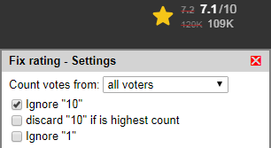
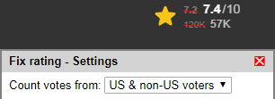
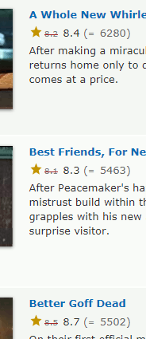
I've verified that it works in both tampermonkey and violentmonkey.
The script gets the values by downloading `imdb.com/title/tt0000000/ratings...` in the background, storing the data and using it for a period of 16 hours (configurable).
For pages with multiple items, when it needs to fetch the values from the server, it does it without hammering the server. This means that it could take several seconds to fill all the elements. It's almost instantaneous when the values are cached. Note that "aggregate of US and non-US voters" is particularly long to load since it needs to get 2 sets of data per film/episode.
Get the script from greasyfork.org
Look at my other IMDb's fixes: "fix title page / title page old layout" , "Fix links" , "Stop scripts" , "Fullscreen imageviewer" , "Set default user reviews sorting"
IMDb - Set default user reviews sorting (2021-10-08)
By default, without modifying the setting, the default sorting is now set to "Helpfulness". It was the default until at least the first half of 2021.
To access the small menu - only available on the title page, or the reference title page - scroll to one of the "User reviews" links, press and maintain CTRL+ALT and click the link with the mouse's left button. (Due to the way the page is designed, your first and maybe your second click could be ignored)
The menu should opens a little below the link. You can then select the default option (including choosing IMDb's default).
The choice is saved immediately and the links are modified (you can move your mouse over them to see the modification).

This userscript has been tested on Firefox and chrome with Tampermonkey or Violentmonkey.
Look at my other IMDb's fixes: "fix title page / title page old layout" , "fix rating" , "Fix links" , "Stop scripts" , "Fullscreen imageviewer"
Get the script from greasyfork.org
IMDb - stop scripts (2021-08-24) (2022-04-10)
Every IMDb page loads more than 30 scripts (almost 50 on the new "title" page). The execution of these script takes a toll on the loading time of the page (from 2s to 10s, depending on the page). But it depends on how powerful your computer is.
Most of the scripts are used to display widgets (on the homepage or on the new title page) or track the user. They are also used to display the suggestion box of the search field. At the end only 4-5 of all the scripts are loaded. The rest is blocked by this userscript.
In fact it prevents them from being executed, but doesn't prevent the browser from loading them. If you have an ad-blocker like uBlock Origin, you can double the effect by adding some rules (see below). But be warned that you'll have to check this page regularly to see if the block list changes (mine hasn't changed since I started using this script almost 2 years ago, in late 2019). Anyway, blocking at "an ad-blocking" level is not necessary.
The blocked scripts are loaded in the following circumstances:
- always on the homepage (useless without)
- always on the image viewer page (control buttons don't work without)
- when the users starts to type something in the search field (takes 2-5s to complete).
All images below when the search field is focused (user is ready to type).
The search field before typing:
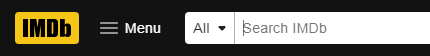
during, and after typing:
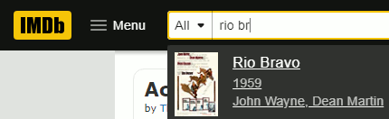
The search field thereafter, or on the homepage, or when the userscript is not applied (all scripts loaded):
The userscript has been tested on chrome and firefox. If you encounter a problem, please post a message.
Get the script from greasyfork.org
Look at my other IMDb's fixes: "fix title page / title page old layout" , "fix rating" , "Fix links" , "Fullscreen imageviewer" , "Set default user reviews sorting"
Filter list to use with uBlock Origin. Copy and paste in your "My filters" tab: (last modified: 2022-03-22)
! << replace with the date at which you add this block in you filter list >> ! 5 filters used (but not needed) to help the userscript: https://greasyfork.org/scripts/431311-imdb-stop-scripts ! speed up imdb page load. Many scripts loaded from there. But still works without them. ||m.media-amazon.com/images/I/*$script,domain=www.imdb.com ! restore search suggestion (combined with userscript) @@||m.media-amazon.com/images/I/*?$script,domain=www.imdb.com ! 20210811 20220322: new "title" layout (film/episode) ||cloudfront.net/_next/static/$script,domain=www.imdb.com ! 20210811: killing scripts uses 100% cpu caused by this: www.imdb.com##.ipc-loader__circle,.ipc-loader__dot:style(animation: unset !important) ! (if :style is not supported by adblocker) www.imdb.com##svg.ipc-loader ! 20210811 20220322: (new "title" layout) restore search suggestion (combined with userscript) @@||cloudfront.net/_next/static/*?$script,domain=www.imdb.com ! === END of filters used for userscript: https://greasyfork.org/scripts/431311-imdb-stop-scriptsAdding these filters alone (without the script) achieves the same result. Except that the search field suggestion won't work, the homepage will have some parts missing, the image viewer won't be able to show previous or next image.
Instagram - browse not loggedInstagram - naviguer non-identifié (2020-05-10) (2020-12-17)
It checks every link on the page, as well as the ones added when scrolling down. And fixes all these links so you can click on them without having to use the right-click menu "Open link in a new tab".
Left-click and CTRL + Left-click now work as expected.
Unfortunately, "stories" and "tagged" links can't be unlocked. While for other links, a script locks them, in this particular case the content is not even sent to you browser if you're not logged in.
Get the script from greasyfork.org
Il vérifie tous les liens de la page, ainsi que ceux ajoutés quand vous la faites défiler. Et corrige ces liens pour pouvoir les utiliser sans avoir à ouvrir le menu clic-droit et à cliquer "Ouvrir le lien dans un nouvel onglet"
Clic-gauche and CTRL + Clic-gauche fonctionnent maintenant normalement.
Malheureusement les liens "histoires / stories" et "identifé(e) / tagged" ne peuvent être débloqués. Contrairement aux autres liens qui sont seulement bloqués pas un script, dans ce cas particulier le contenu n'est même pas envoyé à votre navigateur si vous n'êtes pas connecté.
Le script est disponible sur greasyfork.org
No Google doodle (2021-04-14) (2022-05-02)
Starting with version 0.7, the small doodle on the result pages is also removed (as well as the background image in the top bar).
If you have any doodle still appearing anywhere, please post the url immediately. I need the regional domain to test in the same conditions as you. And I have less than 24 hours to test.
Get the script from greasyfork.org
userstyle.org - fix style editor's page height (2021-08-29) (2021-09-12)
When editing a userstyle, if you resize one of the textarea, or if you add an element in "style settings", the size of the page increases and the "Save" button moves outside of the visible viewport. You have to move up in the page and reduce the height of textarea elements to make the button re-appear.
No more need for that with this small userscript. The element (an iframe) containing the form is automatically resized to fit.
Get the script from greasyfork.org
Youtube - dismiss "sign-in" dialogYoutube - cacher le dialogue "connectez-vous" (2020-09-28) (2022-02-15)
This userscript hides this dialog and auto-dismisses it.
It also takes care of the GDPR cookie dialog for those not using an extension to dismiss GDPR cookie warnings.
And it prevents those 2 dialogs from pausing/stopping the current video if one is playing.
As of version 0.4 there is no exception left. The userscript should prevent pausing and stopping by popups in all situations. (If you still encounter this problem, please report it)
Other smaller popups/dialogs are also dismissed. They are not hidden in case some are not noticed by the script. This is the reason you could still spot them for a short moment before they disappear.
Please report any problem.
I'm unable to test properly on smartphones, but it should work on the latest browsers. If you have a problem provide the version number of the browser you are using. I'll be able to simulate it and try to fix.
Get the script from greasyfork.org
Ce userscript cache ce dialogue et répond "non merci".
Il se charge aussi de cacher le message RGPD à propos des cookies pour ceux qui n'utilisent pas une extension qui cache automatiquement ces messages.
Il empêche aussi ces 2 dialogues de pauser/stopper la vidéo s'il y en a une en train de jouer.
A partir de la version 0.4 il n'existe plus d'exception. Le script devrait empêcher les popups de pauser ou stopper la vidéo. (si vous rencontrez encore ce problème, envoyez-moi un message)
D'autres popups/dialogues sont aussi fermés. Ils ne sont pas cachés au cas où l'un d'eux ne serait pas remarqué par le script. C'est la raison pour laquelle vous pouvez encore les voir pendant un instant avant qu'ils ne disparaissent.
Faites-moi part des problèmes éventuels.
Il ne m'est pas possible de tester convenablement sur les smartphones, mais le script devrait fonctionner sur les derniers navigateurs. Si vous avez un problème veuillez me fournir la version du navigateur que vous utilisez. Il me sera alors possible de le simuler et tenter de faire fonctionner le script correctement.
Le script est disponible sur greasyfork.org
Wayback Machine - toolbar togglerWayback Machine - (dé)masquer la barre d'outils (2020-04-22) (2022-05-22)
The toolbar can be closed by clicking the appropriate icon, but disappears forever (until reloading). And, once again, margins and padding keep their wrong values.
This userscript allows the user to set the toolbar in a "toggle" mode: always masked, and displayed when the mouse is moved over the top of the tab's viewport. Margins and padding are restored to the original values when the toolbar is put in this mode.
As a safeguard in case this script breaks a page (it shouldn't), the "toggle" mode is only activated when double-clicking an empty space in the toolbar (whitespace either on the right or on the left between the logo and the capture infos).
Moving the mouse at the top of the page's viewport should display the toolbar. If it doesn't, it means that an element of the page, usually the header or a fixed element, is in front of the toolbar. Maintain both ctrl and alt keys down while moving the mouse (at the top). When the toolbar reappears, release the keys. It stays visible as long as the mouse is over it.
Once the toolbar is in "toggle" mode, you can click its "close" icon - if it is green - and the toolbar will disappear until you use the "ctrl and alt" trick. If the button is gray it means that the userscript won't be able to respawn it.
- #1: a copy of this page without javascript. Transparency added to show hidden content due to modified margins.
- #2: with javascript and the toolbar. Margins are still incorrect.
- #3: the toolbar in "float" mode. The mouse moved over it to make it visible, the margins are finally correct.
Get the script from greasyfork.org
La barre d'outils peut être fermée en cliquant sur l'icône appropriée, mais disparaît alors définitivement (jusqu'au rechargement). Et les marges restent erronnées.
Ce script permet à l'utilisateur de placer la barre d'outils en mode "masqué": toujours cachée et affichée quand la souris est déplacée en haut de la fenêtre. Les marges sont restaurées à leur valeur d'origine quand la barre est dans ce mode.
Comme protection contre d'éventuelles erreurs du script, le mode "masqué" n'est activé que si on double-clique un espace vide de la barre d'outils (à gauche ou à droite entre le logo et les informations d'archivage).
Déplacer la souris en haut de la page devrait faire réapparaître la barre. Si ce n'est pas le cas, cela signifie qu'un élément de la page, habituellement l'entête ou un élément fixe, se trouve au dessus de la barre d'outils. Maintenez les touches ctrl et alt enfoncée pendant que vous déplacez la souris en haut de la page. Relâchez les touches quand le barre réapparaît. Elle restera visible aussi longtemps que la souris se trouvera au dessus.
Quand la barre d'outil est en mode "masqué", vous pouvez cliquer sur son icône "fermer" (si il est de couleur verte). Elle disparait alors totalement jusqu'à ce que vous utilisiez l'astuce "ctrl et alt". Si le bouton est gris cela signifie que ce userscript ne pourra pas la faire réapparaître.
- #1: une archive de cette page sans javascript. La transparence a été ajoutée pour voir le contenu caché dû aux marges modifiées.
- #2: avec javascript et la barre en mode normal. Les marges ne sont pas encore correctes.
- #3: la barre en mode "masqué". La souris par dessus pour l'afficher, et les marges enfin correctes.
Le script est disponible sur greasyfork.org
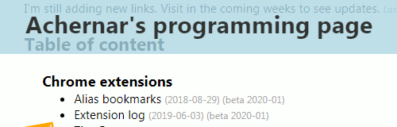#1
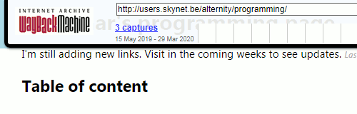#2
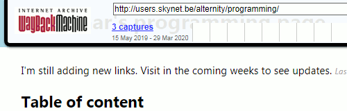#3


{var D=document,i,e,a,k,y,s,m,u,t,r,j,v,h,q,c,src,src0,aa,W=open(),G=W.document;G.open();G.write('<head><title>Images from '+location.href+'</title><style>img{max-width:28vw;}.s img{max-width:8.8vw}td:nth-of-type(3){max-width:28vw;}a{display:inline-block;}table:hover a{background-color:#F0F0F0;}td:hover a{background-color:#E0E0E0;}td a:hover{background-color:#D0D0D0;}div a.s{text-align:center;font-size:85%;margin:2px;border:1px solid lightgray;}a img{position:relative;float:right;clear:both;}[src$=svg].svg,[src^="data:image/svg+xml;"].svg{min-width:28vw;outline:3px solid red;}.s [src$=svg].svg,.s [src^="data:image/svg+xml;"].svg{min-width:8.8vw;}.warn{color:red;text-decoration:none;}.furl{background:lightgray;}</style><base target="_blank"></head>');G.close();function pf(D,wd,hide){var B=[],A=[],i;function C(t){return G.createElement(t)}function P(p,c){p.appendChild(c)}function T(t){return G.createTextNode(t)}function U(u){return new URL(u,location.href).href}function HI(src,a,srcs,csrc,brkn){function addI(src){var aa=C('a'),src0=src;aa.href=src;if(src0.startsWith('data:')){j=src0=src0.substr(0,50)+' [...]';h=''}else{h=src0.split('/')[2];j=src0.split('?')[0].split('/').reverse()[0]}aa.title=src0;s=C('span');s.style.color=['red','gray','green'][y];s.style.fontStyle=['italic','italic',''][y];P(s,T(['missing','empty',a][y]));if(brkn){aa.className='warn';m=T('"404" / filtered')}else {m=C('img');m.src=src}P(aa,m);return aa;}k=escape(src)+'%'+(a!=null)+a;if(!A[k]){y=!!a+(a!=null);aa=addI(src);B.push([0,7,T(j),aa,s,T(h)]);A[k]=B.length}u=B[A[k]-1];if(srcs||csrc){var e=C('div'),t;P(e,u[3]);u[3]=e;}if(csrc){e.innerHTML+='<br>curSrc:<br>';P(e,addI(csrc));}if(srcs){e.innerHTML+='<br>srcset:<br>';srcs.forEach(function(u){var a=C('a'),i=C('img');a.href=U(u[0]);i.src=U(u[0]);a.className='s';a.title=u[0];P(a,i);P(a,C('br'));P(a,T(u[1]||''));P(e,a);});}else{u[1]=(T(++u[0]))}}for(i=0;e=D.images[i];++i){src=e.src||e.currentSrc;src0='';let srcs='';a=e.getAttribute('alt');if(src==e.baseURI)continue;if(src){HI(src,a,null,null,!e.naturalWidth);if(e.currentSrc&&e.src&&(e.src!=e.currentSrc)){src0=e.currentSrc;}}let E=[];if(e.parentNode.tagName=='PICTURE'){e=e.parentNode.children;for(var j=0;j<e.length;j++)E.push(e[j])}else E=[e];while(e=E.shift()){if(j=e.srcset){srcs=srcs||[];if(e.srcset.startsWith('data:')) srcs.push([e.srcset]);else while(k=/(\S+(?: [^\s\,]+)?)[\s,]*(.*)/s.exec(j)){j=k[2];srcs.push(k[1].trim().split(' '));}}}if(srcs||src0)HI(src,a,srcs,src0);}var se=wd.document.querySelectorAll('*'),iob,stb=[];for(i=0;i<se.length;i++){if((src=wd.getComputedStyle(se[i]).getPropertyValue('background-image'))=='none')continue;while(k=/(.*?)(url\(.*?\))(?: *,? *)?(.*)/.exec(src)){stb.push(k[2]);src=k[1]+k[3];}while(k=/(.*?)([a-z-]+gradient\([^\(]*?(?:\(.*?\))?[^\(]*?(?:\(.*?\))?[^\(]*?(?:\(.*?\))?[^\(]*?\))(?: *,? *)?(.*)/.exec(src)){stb.push(k[2]);src=k[1]+k[3];}if(src=src.replace(/^[ ,]*(.*?)[ ,]*$/,"$1"))stb.push(src);}while(src0=src=stb.shift()){iob=src0.startsWith('url\(')?true:false;src=src.replace(/^url\("(.*)"\).*/,"$1");a=null;k=escape(src)+'%css';if(!A[k]){aa=C('a');if(iob)aa.href=src;if(src0.startsWith('url("data:')){j=src0=src0.substr(0,50)+' [...]';h=''}else{h=src0.split('/')[2];j=src0.slice(5,-2).split('?')[0].split('/').reverse()[0]}aa.title=src0;s=C('span');s.style.color='gray';s.style.fontStyle='italic';P(s,T('css'));m=C(iob ? 'IMG': 'DIV');if(iob){m.src=src;}else{m.style.background=src0;m.style.width='100px';m.style.height='100px';j='background style'}P(aa,m);B.push([0,7,T(j),aa,s,T(h||'')]);A[k]=B.length}u=B[A[k]-1];u[1]=(T(++u[0]))}t=C('table');t.border=1;r=t.createTHead().insertRow(-1);for(j=0;v=['#','Filename','Image','Alternate text','Host'][j];++j){h=C('th');P(h,T(v));P(r,h);}if(hide){r=t.insertRow(0);c=r.insertCell(-1);c.colSpan=5;c.width=1;c.className='furl';P(c,T('frame ("'+wd.frameElement.id+'"): '+(wd.location.href==window.location.href?'':wd.location.href)));}for(i=0;q=B[i];++i){r=t.insertRow(-1);for(j=1;v=q[j];++j){c=r.insertCell(-1);P(c,v);hide=false;}}if(hide)return;P(G.body,t);}pf(D,window);var wf=window.frames;for(i=0;i<wf.length;i++){try{pf(wf[i].document,wf[i],true)}catch(e){}}W.g=function(){if(this.width==0&&this.naturalWidth>0)this.classList.add("svg");else if(this.naturalWidth>0)this.parentNode.title=this.naturalWidth+" x "+this.naturalHeight+'\n'+this.parentNode.title};W.f=function(){if(W.document.readyState!="complete")return;var e=W.document.querySelectorAll("img");for(var i=0;i<e.length;i++)e[i].onload=W.g};W.f();function fA(w){function F(n){var u,r,c,x;if(n.nodeType==3){u=n.data.search(/[^ \r\n]{35}/);if(u>=0){tot++;r=n.splitText(u+34);n.parentNode.insertBefore(D.createElement('WBR'),r)}}else if(n.tagName!='STYLE'&&n.tagName!='SCRIPT'&&n.tagName!='NOSCRIPT'){for(c=0;x=n.childNodes[c];++c){F(x)}}}var D=w,tot=0;F(D.body);if(tot)with(D.body.style){display='none';display=''}}fA(G)})()){kind=link}